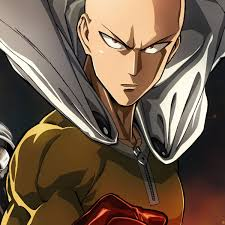
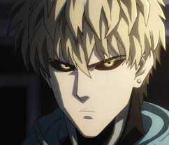

Historia de la creacion del comic
One Punch-Man (ワンパンマン lit. Hombre-Un Golpe?) es un webcómic de acción y comedia japonés, creado por el artista One e iniciado en 2009. El webcómic rápidamente ganó popularidad, llegando a alcanzar las 8 millones de visitas. La pronunciación de su nombre en japonés, "Wanpanman", es un juego de palabras basado en el personaje infantil Anpanman, siendo wanpan una contracción de wanpanchi («un golpe»).5 La historia se centra en Saitama, un superhéroe calvo y extremadamente fuerte que se muestra abrumado por la ausencia de un verdadero desafío, y que continuamente busca a un oponente digno de su poder.
Una versión digital, ilustrada por Yusuke Murata, comenzó a publicarse en el sitio web de la revista Young Jump en 2012. Shūeisha también publica el manga en físico. Fue licenciado en Estados Unidos por Viz media, y actualmente es publicado en la revista Weekly Shonen Jump Alpha.6
Una adaptación a serie de anime producida por el estudio Madhouse, fue emitida en Japón entre octubre y diciembre de 2015.78 El 25 de septiembre de 2017 se anunció que se cambiaría de director y de estudio de animación, siendo J.C.Staff la que se encargaría de la segunda temporada, que empezó a emitirse el 9 de abril de 2019 y finalizó el 2 de julio de 2019
Personajes Principales
Saitama
Es un hombre de 25 años de edad, calvo y de
mirada inexpresiva, Sin embargo es el héroe más poderoso del mundo,
sus logros carecen de reconocimiento por parte de la Mayoría de la
gente y los demás héroes.
Su habilidad consiste en una fuerza y habilidades físicas más allá
de cualquier proporción o escala que sea posible imaginar,
debido a esto casi la totalidad de sus oponentes son derrotados de
un solo golpe.

Genos
Un joven cíborg que llegó a la ciudad enfrentando
monstruos como una forma de encontrar pistas para dar con el cíborg
quién mató a su familia
cuando era un adolescente; tras conocer a Saitama logró que lo
convirtiera en su discípulo con la esperanza de obtener el poder
necesario para concretar su venganza, sin embargo la
influencia de este lo ha ayudado a acercarse más a su propia
humanidad y lo ha llevado a convertirse en uno de los héroes
con mejor reputación y clasificación en la asociación.

Episodios del anime
Temporada uno
- 1 «El hombre más fuerte»
- 2 «El androide solitario»
- 3 «El científico obsesivo»
- 4 «El ninja moderno»
- 5 «El maestro supremo»
- 6 «La ciudad aterradora»
- 7 «El discípulo supremo»
- 8 «El rey del mar profundo»
- 9 «Justicia inquebrantable»
- 10 «Peligro sin precedentes»
- 11 «El conquistador del universo»
- 12 «El héroe más fuerte»
Ovas
- 13 «El camino a héroe»
- 14 «Una sombra que se esconde muy cerca»
- 15 «El discípulo que es extremadamente poco hablador»
- 16 «Un ninja demasiado complicado»
- 17 «Bang, que es demasiado controlador»
- 18 «Las hermanas a las que les pasan muchas cosas»
- 19 «El caso del asesinato que era demasiado imposible»
Temporada dos
- 20 «El retorno del héroe»
- 21 «El monstruo humano»
- 22 «Empieza la caza»
- 23 «Bate metálico»
- 24 «Torneo de artes marciales»
- 25 «El levantamiento de los monstruos»
- 26 «Héroes de la clase S»
- 27 «La resistencia de los fuertes»
- 28 «Las preocupaciones del más fuerte»
- 29 «Asedio justiciero»
- 30 «El orgullo de cada uno»
- 31 «La voluntad del discípulo»